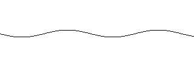
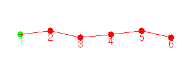
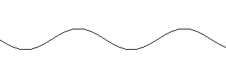
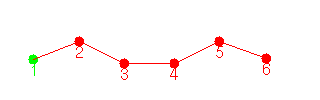
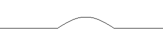

La generación automática de secuencias utilizando el programa Cube-virtual permite estudiar la locomoción en función de las características de las ondas que recorren el gusano desde la cola a la cabeza.
Una onda sinusoidal con una amplitud pequeña permite que Cube Reloaded pueda pasar por debajo de obstáculos o introducirse en tubos de pocos centímetros de diámetro. El avance del gusano es más lento.
Una onda sinusoidal de mayor amplitud hace que el avance se haga más rápidamente y que pueda superar escalones de mayor tamaño.
Una semionda hace que el movimiento sea más estable, porque en cada instante de tiempo hay un mayor número de puntos de apoyo con el suelo. Este movimiento es el empleado por los gusanos de seda y resulta muy útil para superar obstáculos.
| Onda sinusoidal de 6 unidades de amplitud |  |
 |
| Onda sinusoidal de 15 unidades de amplitud |  |
 |
| Semionda de 25 unidades de amplitud |  |
 |